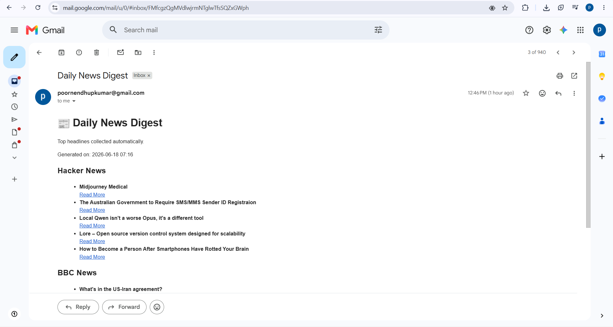

AUTOMATION
PulseBot
An automated news digest bot that scrapes top headlines from sources like Hacker News and BBC and fetches real-time weather updates using APIs, retrieves an inspirational quote of the day,generates random interesting facts then emails a clean daily summary straight to the inbox —no manual checking required.